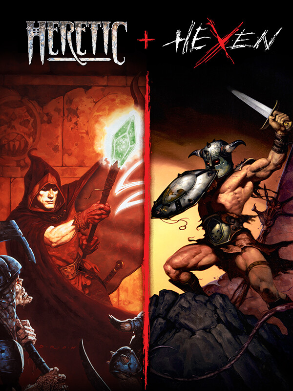

Heretic + Hexen
Heretic + Hexen
Details
|  | |
| Playtime | Not Played |
| Last Activity | Never |
| Added | 13/08/2025 16:55:24 |
| Modified | 13/08/2025 16:55:55 |
| Completion Status | Not Played |
| Library | Steam |
| Source | Steam |
| Platform | PC (Windows) |
| Release Date | 07/08/2025 |
| Community Score | |
| Critic Score | |
| User Score | |
| Genre | Adventure Role-playing (RPG) |
| Developer | Raven Software |
| Publisher | Bethesda Softworks |
| Feature | Co-Operative Multiplayer Single Player |
| Links | Uknown Uknown Uknown Uknown Uknown Uknown |
| Tag | |
Description
Step into the definitive re-release of two dark spell-casting shooters that shaped the genre.
Forged by Raven Software on a modified DOOM engine, Heretic and Hexen were released in 1994 and 1995, pushing first person shooters into bold new territory. These innovative cult classics introduced groundbreaking features like inventory systems, vertical aiming, and distinct character classes, reshaping first person action games for generations to come. This enhanced restoration makes Heretic + Hexen available to new audiences and long-time fans with expanded accessibility across more platforms and languages than ever before. Whether you're returning to these shadowy realms or discovering them for the first time, an epic legacy awaits.
Owners Receive
Heretic: Shadow of the Serpent Riders¹
Hexen: Beyond Heretic¹
Hexen: Deathkings of the Dark Citadel¹
Two all-new episodes created in collaboration between individuals at id Software + Nightdive Studios:
Heretic: Faith Renewed
Hexen: Vestiges of Grandeur
There are a total of 117 campaign maps and 120 deathmatch maps in Heretic + Hexen.
New Enhancements
Online cross-platform deathmatch and co-op for up to 16 players²
Local split-screen deathmatch and co-op for up to 8 players
Toggleable, enhanced Tome of Power soundtrack by Andrew Hulshult
Community-published mod support with an in-game mod browser² ³
Improved performance with multithreaded rendering supporting up to 4K resolution and 120 FPS⁵
A Vault section containing concept art and unused sprites from the development of the original games
Accessibility options, such as updated UI, improved legibility, contrast and screen FX adjustments, and text-to-speech features.
Modern controller support
Weapon carousel for faster weapon switching
Game balance toggle (original/enhanced)
Quick Save/Load support
Widescreen support
Many engine fixes for bugs present in original versions
Translated into 12 new languages: French, Italian, German, Spanish, LATAM Spanish, Brazilian Portuguese, Polish, Russian, Japanese, Korean, Traditional Chinese and Simplified Chinese
¹Original DOS versions of Heretic: Shadow of the Serpent Riders, Hexen: Beyond Heretic and Hexen: Deathkings of the Dark Citadel are included in the Steam version.
² account required.
³Mods need to be installed separately; installation requires additional system storage.
⁵Compatible display required.
About the Included Games
Heretic: Shadow of the Serpent Riders
Three brothers, known as the Serpent Riders, used their powerful magic to possess and corrupt the seven kings of the realm, plunging it into war and chaos. But a race of elves known as the Sidhe resisted and were branded heretics. On the brink of losing the war, the Sidhe elders sacrificed themselves and the elven capital city to destroy the seven kings and their armies. As one of the few surviving elves, you embark on a quest for vengeance against those who slaughtered your friends, family, and entire race.
Heretic: Faith Renewed [NEW]
Years after the planes were cleansed of D'Sparil's wretched influence, a wandering warrior in search of home arrives at a foreign land to discover the blighted stains of that old time religion seeping through the cracks of society once more. In the fortified city, zealous acolytes stand high atop a decadent cathedral and listen to the lamentations echoing from the streets as non-believers are dragged away for 'correction.' The shadow of D'Sparil lingers after death, his absence attributed to apotheosis. Once revered, now worshipped, deserving of neither. An all-too-familiar scene, and one you simply cannot stomach. Taking up the mantle of Heretic once more, you stride into the city, staff in hand, to silence the echoes of your arch-nemesis.
Hexen: Beyond Heretic
While the Sidhe elf Corvus battled the evil forces of D'Sparil, the remaining two Serpent Riders were busy sowing the seeds of destruction in other dimensions. As a Warrior, Mage, or Cleric, you must fight the undead and brave elemental dungeons and decaying wilderness to defend your realm of Cronos from Korax, the second Serpent Rider.
Hexen: Deathkings of the Dark Citadel
After defeating the evil Korax, the second Serpent Rider, and discovering the Chaos Sphere, you have been transported to the Realm of the Dead. Now your only way home is blocked by hordes of undead and the Dark Citadel. Where Hexen ends, the true nightmare begins.
Hexen: Vestiges of Grandeur [NEW]
Korax lingers between life and death, his shredded corpse left behind with no semblance of life while he clings to a fresh, if fragile, rebirth. His grip on Cronos is once more released, yet the cycle continues, proving another force is at work: an invisible hand puppeteering both Korax and you, weaving a star-crossed destiny that will never die. And if that hand tugs the threads of fate again, what surprises are yet in store for you?